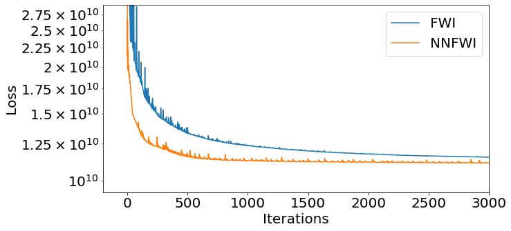
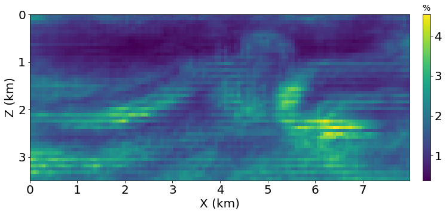

NNFWI
Integrating Deep Neural Networks with Full-waveform Inversion: Reparametrization, Regularization, and Uncertainty Quantification
Architecture

Forward Simulation
| Marmousi model | Inital 1D model |
|---|---|
| BP2004 model | Inital 1D model |
|---|---|
 |
Inversion based on Automatic Differentiation
Loss function
| Noise level | Marmousi model | BP2004 model |
|---|---|---|
| $\sigma=0$ |  | |
| $\sigma=0.5$ |  |  |
Marmousi model
| Noise level | Traditional FWI | NNFWI |
|---|---|---|
| $\sigma=0$ | ||
| $\sigma=0.5$ |  |  |
| $\sigma=1$ |  |  |
BP2004 model
| Noise level | Traditional FWI | NNFWI |
|---|---|---|
| $\sigma=0$ |  | |
| $\sigma=0.5$ | ||
| $\sigma=1$ |  |
Uncertainty Quantification using Dropout
| Inverted $V_p$ | std($V_p$) | std($V_p$)/$V_p$ $\cdot$ 100% |
|---|---|---|
 |  | |
 |